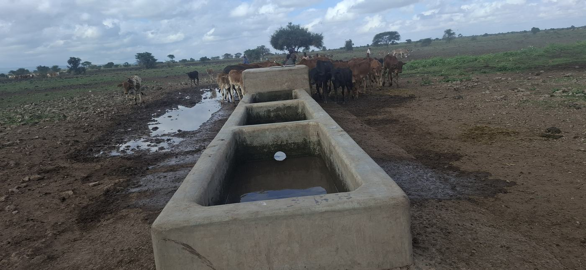

A proposal to rehabilitate the ageing 1974 pipeline supplying the OOGR Maasai community north of Amboseli National Park, replacing failing pumps and decayed piping for roughly 3,000 people and 10,000 livestock, and easing pressure on the park's ecosystem.
The 1974-built, 87.4km Amboseli pipeline is now dilapidated — frequent bursts, a failing intake pump and reduced pumping hours leave the community and 10,000+ livestock without reliable water, forcing incursions into Amboseli National Park.